| 1st generation | |||||||
|---|---|---|---|---|---|---|---|
| 名前 | 生年月日 | 出身地 | 身長 | ニックネーム | 備考 | ||
| 潮 紗理奈 | 1997.12.26 | 神奈川県 | 157cm | ・なっちょ | インドンネシア語と英語ができる 優しい性格で“日向坂の聖母”としてファンからも親しまれている なっちょ |
||
| 影山優佳 | 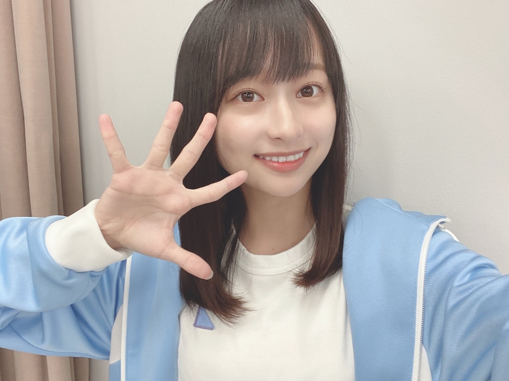 | 2001.5.8 | 東京都 | 156cm | ・影ちゃん ・かげ～ |
グループきっての頭脳派で、サッカー大好き！ 2018.6~2020.5の間学業専念のため一時活動を休止 帰ってきた影さん |
|
| 加藤 史帆 | 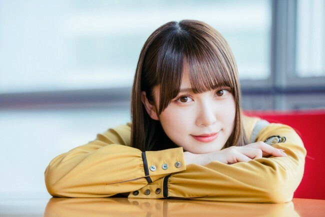 | 1998.2.2 | 東京都 | 160cm | ・かとし ・としちゃん ・しし ・しほりん |
「へにょへにょ」な喋り方 「Can Can」専属モデル かとし |
|
| 斉藤京子 | 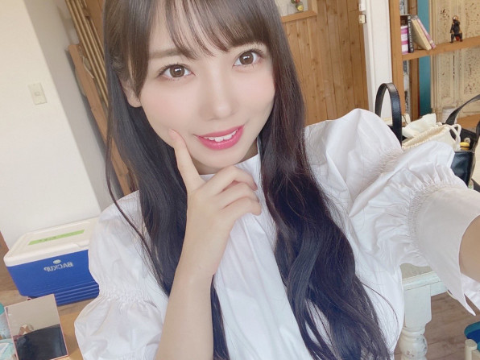 | 1997.9.5 | 東京都 | 154cm | ・きょんこ ・京一 |
見た目とは違いカッコイイ低音ボイス ラーメン大好き 必殺「きょんこハート」 「ar」レギュラーモデル ぶりっ子王座決定戦 |
|
| 佐々木 久美 | 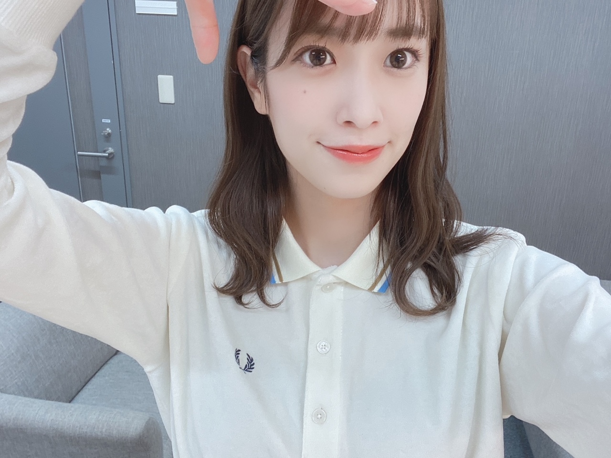 | 1996.1.22 | 千葉県 | 167.5cm | ・ささく ・くみてん ・きくちゃん ・キャプテン ・久美蔵 |
面倒見がよく、抜群のギャグセンスを持つキャプテン！ 超絶美人！！ 「Ray」専属モデル 佐々木久美42歳 天然ぶりっ子 |
|
| 佐々木 美玲 | 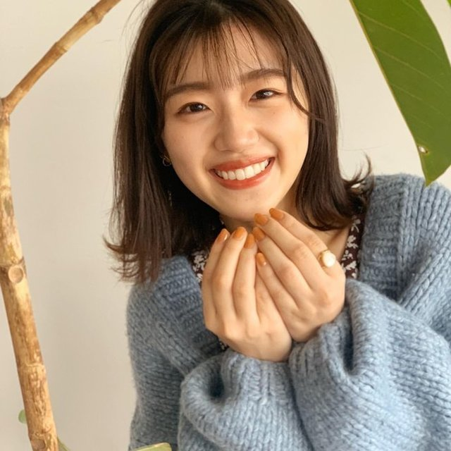 | 1999.12.17 | 兵庫県 | 165cm | ・みーぱん ・ささみ |
台湾に住んでいた帰国子女 「イマニミテイロ」や「期待していない自分」でセンターを務める 「non-no」専属モデル あたちキャラを生み出した あたちは～ みーぱんまとめ |
|
| 高瀬愛奈 | 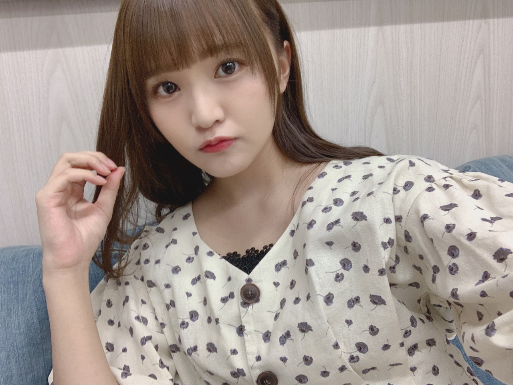 | 1998.9.20 | 大阪府 | 157cm | ・まなふぃ | イギリス帰りのネイティブ並みの英語力！ シナモンを参考にした「まなふぃポーズ」が武器 まなふぃまとめ |
|
| 高本彩花 | 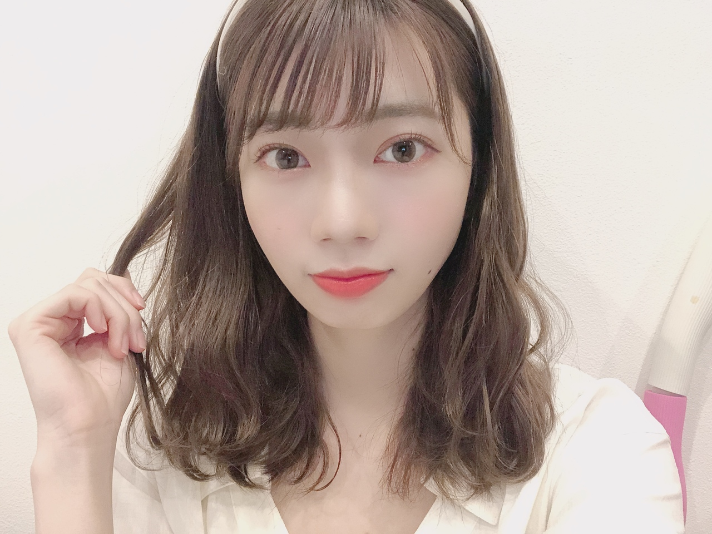 | 1998.11.2 | 神奈川県 | 162cm | ・あや ・おたけ |
自他共に認める匂いフェチで、 においだけでメンバーを当てる特殊能力を持つ。 小顔でスタイル抜群！ 「JJ」専属モデル おたけまとめ |
|
| 東村芽衣 | 1998.8.23 | 奈良県 | 153cm | ・やんちゃる ・めいめい |
特技はカラーガード 身体能力に優れ、ダンスのキレはメンバーも絶賛するほど！ グループ1の泣き虫で、ホントは猫 やんちゃるなシーン スパーアスリートやんちゃる |
||
| 2nd generation | |||||||
| 金村美玖 | 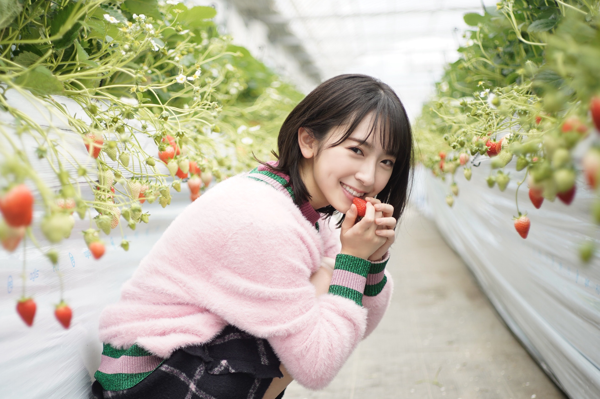 | 2002.9.10 | 埼玉県 | 162cm | ・みく ・お寿司 |
特技はアルトサックス！ その他にもイラストや写真撮影などが得意な芸術系! 無類のお寿司好きでキャッチコピーは「みなさん美玖をお寿司かない！！」 お寿司かないまとめ 吹奏楽部あるある |
|
| 河田陽菜 | 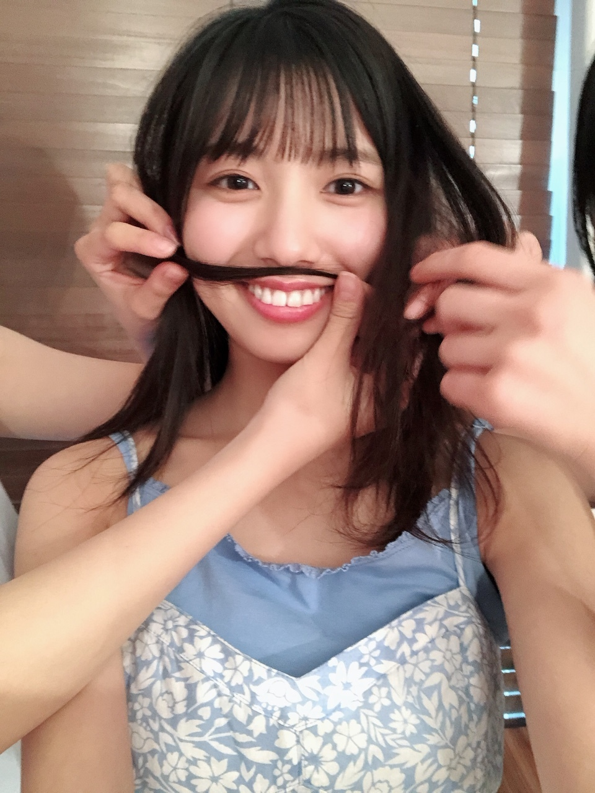 | 2001.7.23 | 山口県 | 153cm | ・ひな ・KAWADAさん |
天性の愛されキャラ！ メンバーからも「妹にしたいNo.1」に選ばれる マンハッタン大好き？ KAWADAさんまとめ 怪談師河田陽菜！ |
|
| 小坂菜緒 | 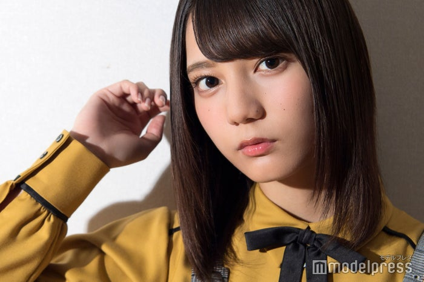 | 2002.9.7 | 大阪府 | 161cm | ・こさかな ・なお |
日向坂46の多くの曲でセンターを務める えいが「恐怖人形」に単独出演！ 恐竜とあだち充作品が好き 「Seventeen」専属モデル こさかおし 「まだスマート調光じゃないの？」 |
|
| 富田鈴花 | 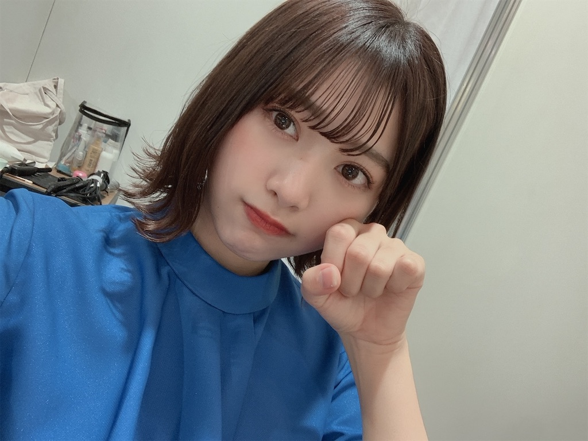 | 2001.1.18 | 神奈川県 | 164cm | ・すず ・すーじー ・すーちゃん |
楽器の演奏が得意で、ピアノ、エレクトーン、ギター、 ベースと幅広く弾きこなす ライブではラップを披露することも！ "パリピ"キャラだが根は真面目！(キャラ迷走中) おすずの負け癖 成長の軌跡 |
|
| 丹生明里 | 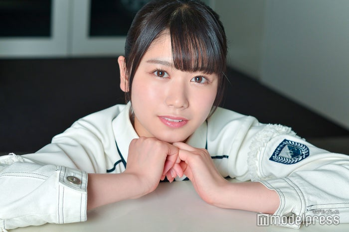 | 2001.2.15 | 埼玉県 | 156cm | ・丹生ちゃん | 剣道三段の資格を持つ！ 好きな漫画は「ドラゴンボール」 とてもピュアな心の持ち主 「タルタルチキン！」の伝説を持つ 丹生ちゃんまとめ タルタルチキン(佐々木久美ver.) |
|
| 濱岸ひより | 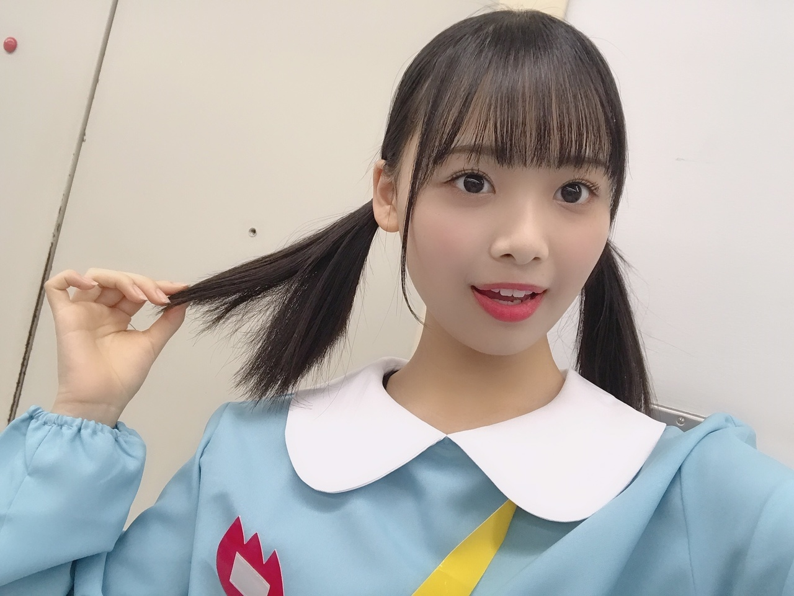 | 2002.9.28 | 福岡県 | 166cm | ・ひよたん ・おはま |
趣味は宝塚観劇 特技はクラシックバレエ きょんことは違う特徴のある声の持ち主！ おはままとめ ゲラ女王 |
|
| 松田好花 | 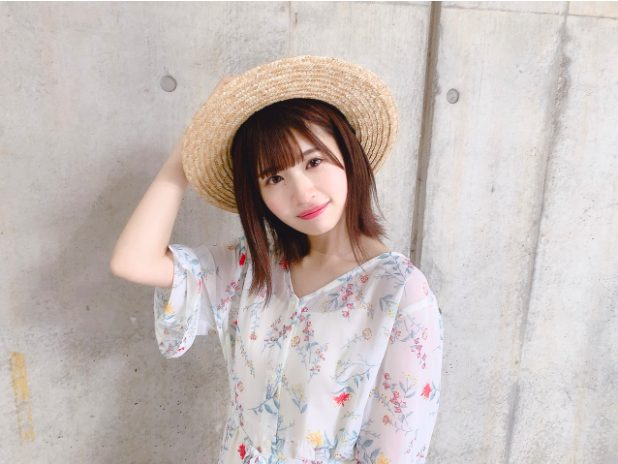 | 1999.4.27 | 京都府 | 157cm | ・このちゃん ・だーこの ・このか |
高校時代はバンドでギターを担当 バレエ、和太鼓、タップダンス、インド舞踊も習っていた！ 好きなものは納豆！ 大喜利のセンスを生かしてラジオ番組にも投稿 ニンニン肉のカーテン！ このちゃん名言集 |
|
| 宮田愛萌 | 1998.4.28 | 東京都 | 158cm | ・まなも | |||
| 渡邊美穂 | 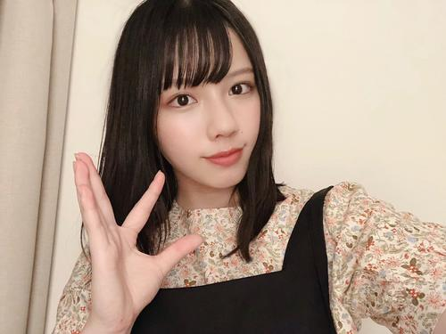 | 2000.2.24 | 埼玉県 | 158cm | ・みほ ・べみほ |
||
| 3rd generation | |||||||
| 上村ひなの | 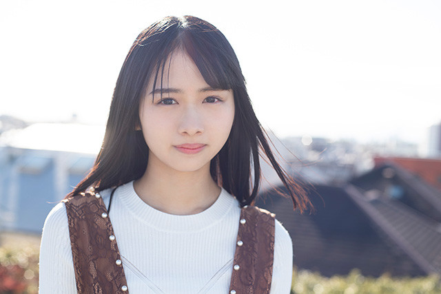 | 2004.4.12 | 東京都 | 161cm | ・ひなの ・ひなのなの |
||
| 髙橋未来虹 | 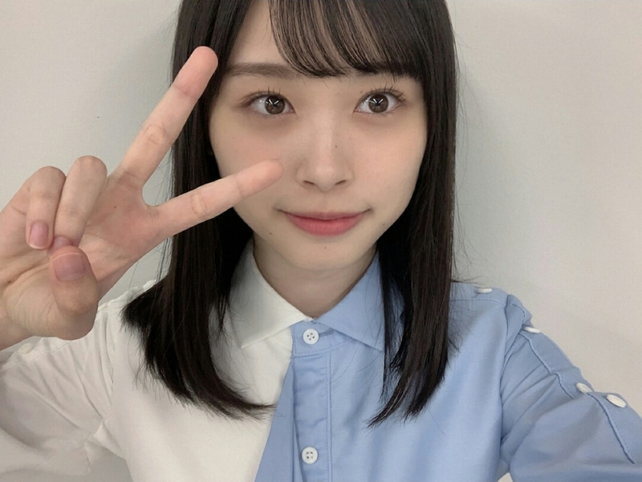 | 2003.9.27 | 東京都 | 168.5cm | ・みくにん ・たーちゃん |
||
| 森本茉莉 | 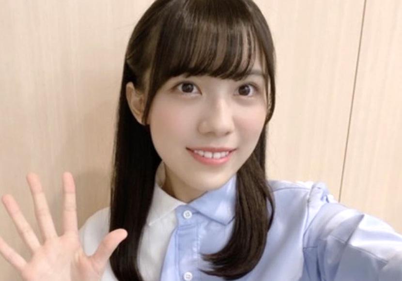 | 2004.2.23 | 東京都 | 159.6cm | ・まりぃちゃん ・まーちゃん |
||
| 山口陽世 | 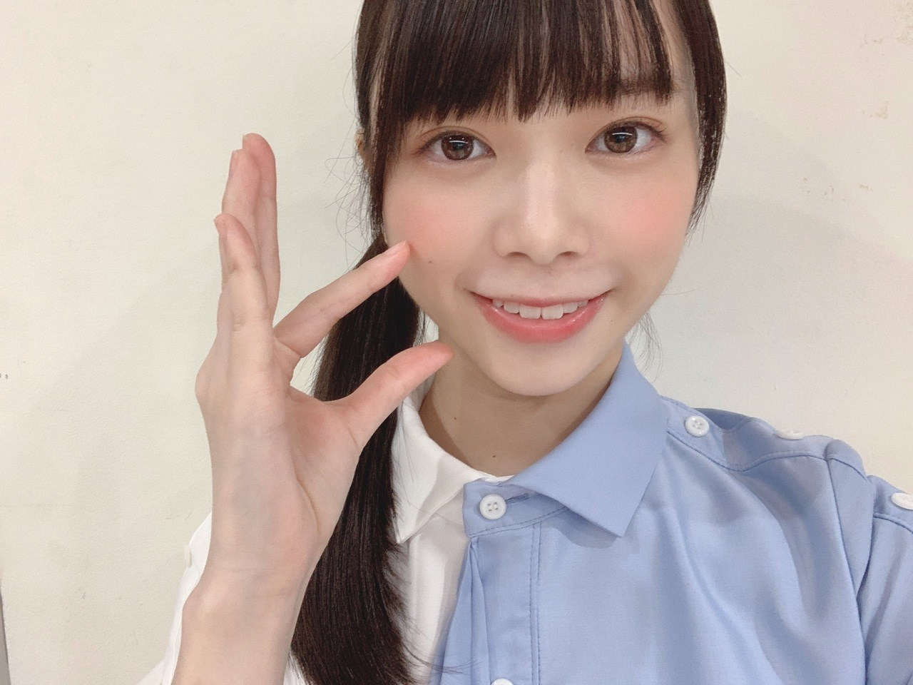 | 2004.2.23 | 鳥取県 | 151cm | ・ぱる ・はるよ ・ぐっちゃん ・ぱるよ |
||
| 卒業メンバー | |||||||
| 長濱ねる | 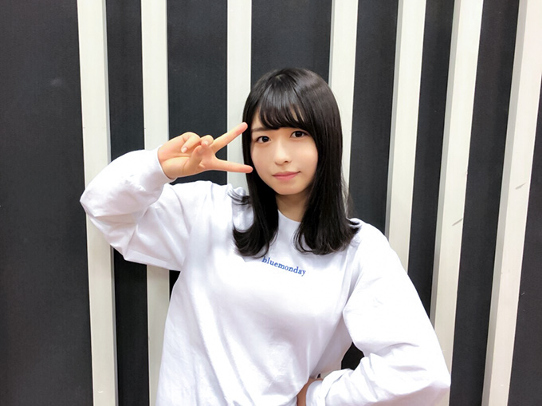 | 1998.9.4 | 長崎県 | 159cm | ・ねる ・ながる |
||
| 柿崎芽実 | 2001.12.2 | 長野県 | 156cm | ・めみ | |||
| 井口眞緒 | 1995.11.10 | 新潟県 | 163cm | ・まお | |||